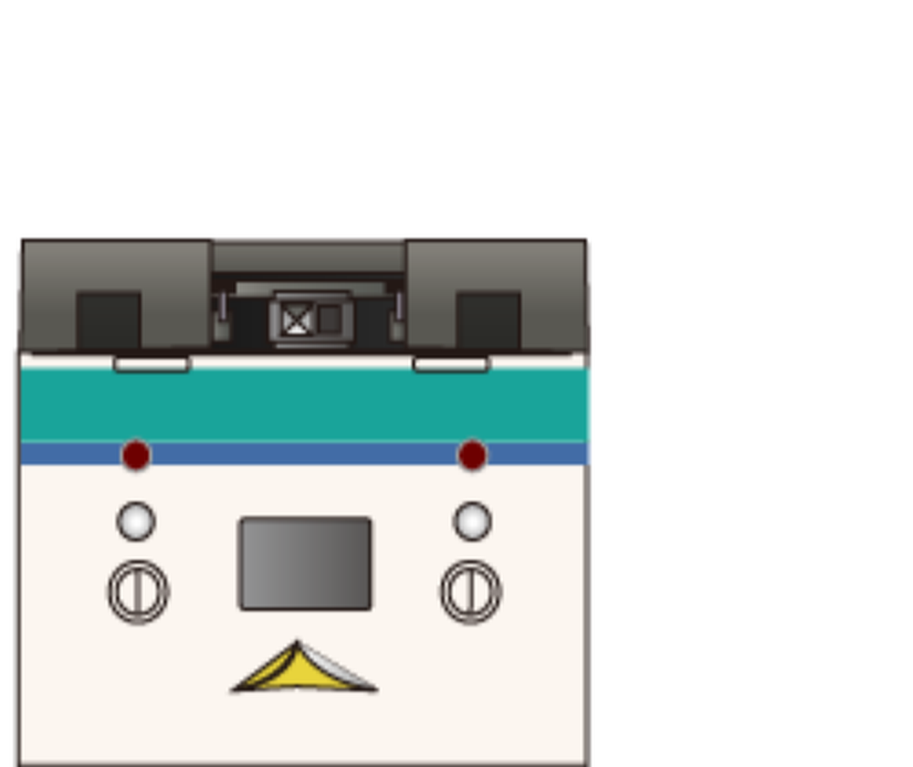
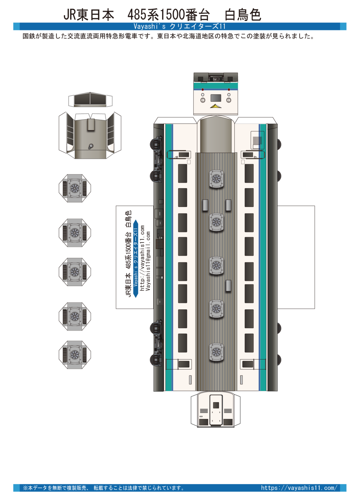

MC 核对：图纸上到底有没有风挡、红灯板？｜图纸 jr_east_485_1500_hakutyo.pdf（1 页，A4）｜2026-11-28

脸件在图纸右上方，整张脸就是这么大。灰顶带＋青绿带＋奶油脸＋灰色行先框＋框下黄 ▲。

整页就这一个车头脸件。车身侧面有车窗，车顶有风扇，那是侧面和车顶的件，不是车头脸。
说明：两张图均由 jr_east_485_1500_hakutyo.pdf 直接渲染截取（300 dpi），未改动任何线条和颜色。脸件放大图仅做了 2 倍放大。第五轮返工报告 R5-CAB1 称“图纸根本没画风挡、没画红灯板”，请 MC 按上图亲自核对。